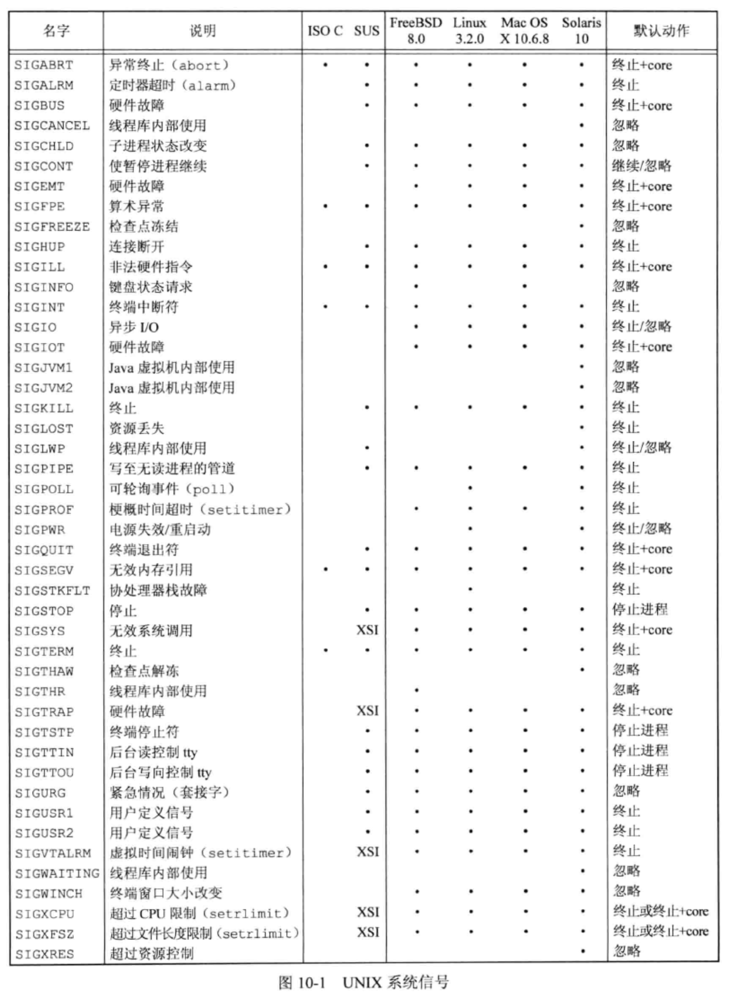

<!DOCTYPE html>
<html lang="en">

<head>
  <meta charset="utf-8" />
   
  <meta name="keywords" content="生活,旅行,思考,代码,博客" />
   
  <meta name="description" content="一座孤岛" />
  
  <meta name="viewport" content="width=device-width, initial-scale=1, maximum-scale=1" />
  <title>
    《UNIX环境高级编程》第10章——信号 |  akaQin&#39;s Blog
  </title>
  <meta name="generator" content="hexo-theme-yilia-plus">
  
  <link rel="shortcut icon" href="/favicon.ico" />
  
  
<link rel="stylesheet" href="/css/style.css">

  
<script src="/js/pace.min.js"></script>


  

  

<link rel="alternate" href="/atom.xml" title="akaQin's Blog" type="application/atom+xml">
</head>

</html>

<body>
  <div id="app">
    <main class="content">
      <section class="outer">
  <article id="post-《UNIX环境高级编程》第10章——信号" class="article article-type-post" itemscope
  itemprop="blogPost" data-scroll-reveal>

  <div class="article-inner">
    
    <header class="article-header">
       
<h1 class="article-title sea-center" style="border-left:0" itemprop="name">
  《UNIX环境高级编程》第10章——信号
</h1>
  

    </header>
    

    
    <div class="article-meta">
      <a href="/2020/03/13/%E3%80%8AUNIX%E7%8E%AF%E5%A2%83%E9%AB%98%E7%BA%A7%E7%BC%96%E7%A8%8B%E3%80%8B%E7%AC%AC10%E7%AB%A0%E2%80%94%E2%80%94%E4%BF%A1%E5%8F%B7/" class="article-date">
  <time datetime="2020-03-13T12:35:08.000Z" itemprop="datePublished">2020-03-13</time>
</a>
      
  <div class="article-category">
    <a class="article-category-link" href="/categories/%E3%80%8AAPUE%E3%80%8B%E7%AC%94%E8%AE%B0/">《APUE》笔记</a>
  </div>

      
      
<div class="word_count">
    <span class="post-time">
        <span class="post-meta-item-icon">
            <i class="ri-quill-pen-line"></i>
            <span class="post-meta-item-text"> 字数统计:</span>
            <span class="post-count">3k字</span>
        </span>
    </span>

    <span class="post-time">
        &nbsp; | &nbsp;
        <span class="post-meta-item-icon">
            <i class="ri-book-open-line"></i>
            <span class="post-meta-item-text"> 阅读时长≈</span>
            <span class="post-count">12分钟</span>
        </span>
    </span>
</div>

      
    </div>
    

    
    
    <div class="tocbot"></div>


    

    
    <div class="article-entry" itemprop="articleBody">
      


      

      
      <h2 id="信号概念"><a href="#信号概念" class="headerlink" title="信号概念"></a>信号概念</h2><p>信号是软件中断。它提供了一种处理异步事件的方法。每个信号都有一个名字，以SIG开头。在头文件&lt;signal.h&gt;中，信号名都被定义为正整数常量（信号编号）。<br>不存在编号为0的信号。kill函数对信号编号0有特殊的作用。POSIX.1将此中信号编号值称为空信号。<br>信号出现时，内核按下列三种方式之一进行处理：</p>
<ul>
<li>忽略此信号。大多数信号都可使用这种方式进行处理，但有两种信号决不能被忽略，它们是SIGKILL和SIGSTOP。原因是它们想内核提供了使进程终止或停止的可靠方法。</li>
<li>捕捉信号。为了做到这一点，要通知内核在某种信号发生时，调用一个可执行用户希望对这种事件进行的处理的用户函数。</li>
<li>执行系统默认动作。对大多数信号的系统默认动作是终止该进程。<br></li>
</ul>
<a id="more"></a>

<h2 id="函数signal"><a href="#函数signal" class="headerlink" title="函数signal"></a>函数signal</h2><figure class="highlight c"><table><tr><td class="gutter"><pre><span class="line">1</span><br><span class="line">2</span><br><span class="line">3</span><br><span class="line">4</span><br><span class="line">5</span><br><span class="line">6</span><br></pre></td><td class="code"><pre><span class="line"><span class="meta">#<span class="meta-keyword">include</span> <span class="meta-string">&lt;signal.h&gt;</span></span></span><br><span class="line"></span><br><span class="line"><span class="comment">// void (*signal(int signo, void (*func)(int)))(int);</span></span><br><span class="line"><span class="comment">//等价于</span></span><br><span class="line"><span class="function"><span class="keyword">typedef</span> <span class="keyword">void</span> <span class="title">Sigfunc</span><span class="params">(<span class="keyword">int</span>)</span></span>;</span><br><span class="line"><span class="function">Sigfunc *<span class="title">signal</span><span class="params">(<span class="keyword">int</span>, Sigfunc *)</span></span>;</span><br></pre></td></tr></table></figure>

<figure class="highlight c"><table><tr><td class="gutter"><pre><span class="line">1</span><br><span class="line">2</span><br><span class="line">3</span><br><span class="line">4</span><br><span class="line">5</span><br><span class="line">6</span><br><span class="line">7</span><br><span class="line">8</span><br><span class="line">9</span><br><span class="line">10</span><br><span class="line">11</span><br><span class="line">12</span><br><span class="line">13</span><br><span class="line">14</span><br><span class="line">15</span><br><span class="line">16</span><br><span class="line">17</span><br><span class="line">18</span><br><span class="line">19</span><br><span class="line">20</span><br><span class="line">21</span><br><span class="line">22</span><br><span class="line">23</span><br><span class="line">24</span><br><span class="line">25</span><br><span class="line">26</span><br><span class="line">27</span><br><span class="line">28</span><br><span class="line">29</span><br></pre></td><td class="code"><pre><span class="line"></span><br><span class="line"><span class="meta">#<span class="meta-keyword">include</span> <span class="meta-string">"apue.h"</span></span></span><br><span class="line"></span><br><span class="line"><span class="function"><span class="keyword">static</span> <span class="keyword">void</span> <span class="title">sig_usr</span><span class="params">(<span class="keyword">int</span> signo)</span></span>;</span><br><span class="line"></span><br><span class="line"><span class="function"><span class="keyword">int</span> <span class="title">main</span><span class="params">(<span class="keyword">void</span>)</span></span></span><br><span class="line"><span class="function"></span>&#123;</span><br><span class="line">    <span class="keyword">if</span> (signal(SIGUSR1, sig_usr) == SIG_ERR) &#123;</span><br><span class="line">        err_sys(<span class="string">"signal error"</span>);</span><br><span class="line">    &#125;</span><br><span class="line">    <span class="keyword">if</span> (signal(SIGUSR2, sig_usr) == SIG_ERR) &#123;</span><br><span class="line">        err_sys(<span class="string">"signal error"</span>);</span><br><span class="line">    &#125;</span><br><span class="line"></span><br><span class="line">    <span class="keyword">for</span> (;;) &#123;</span><br><span class="line">        pause();</span><br><span class="line">    &#125;</span><br><span class="line">&#125;</span><br><span class="line"></span><br><span class="line"><span class="function"><span class="keyword">static</span> <span class="keyword">void</span> <span class="title">sig_usr</span><span class="params">(<span class="keyword">int</span> signo)</span></span></span><br><span class="line"><span class="function"></span>&#123;</span><br><span class="line">    <span class="keyword">if</span> (signo == SIGUSR1) &#123;</span><br><span class="line">        <span class="built_in">printf</span>(<span class="string">"received SIGUSR1\n"</span>);</span><br><span class="line">    &#125; <span class="keyword">else</span> <span class="keyword">if</span> (signo == SIGUSR2) &#123;</span><br><span class="line">        <span class="built_in">printf</span>(<span class="string">"received SIGUSR2\n"</span>);</span><br><span class="line">    &#125; <span class="keyword">else</span> &#123;</span><br><span class="line">        err_dump(<span class="string">"received signal %d\n"</span>, signo);</span><br><span class="line">    &#125;</span><br><span class="line">&#125;</span><br></pre></td></tr></table></figure>
<p><strong>注意：在UNIX系统中，杀死（kill）这个术语是不恰当的。kill（1）命令和kill（2）函数只是将一个信号发送给一个进程或进程组。该信号是否终止进程则取决于该信号的类型，以及进程是否安排了捕捉该信号</strong></p>
<h3 id="程序启动"><a href="#程序启动" class="headerlink" title="程序启动"></a>程序启动</h3><p>当执行一个程序时，所有信号的状态都是系统默认或忽略。通常所有信号都被设置为它们的默认动作，除非调用exec的进程忽略该信号。<br>当进程执行一个新程序后，信号捕捉函数的地址很可能在所执行的新程序文件中已无意义。</p>
<h3 id="进程创建"><a href="#进程创建" class="headerlink" title="进程创建"></a>进程创建</h3><p>当一个进程调用fork时，其子进程继承父进程的信号处理方式。因为子进程在开始时复制了父进程内存映像，所以信号捕捉函数的地址在子进程中是有意义的。</p>
<h2 id="可重入函数"><a href="#可重入函数" class="headerlink" title="可重入函数"></a>可重入函数</h2><p>进程捕捉到信号并对其进行处理时，进程正在执行的正常指令序列就被信号处理程序临时中断，它首先执行该信号处理程序中的指令。如果信号处理程序返回（例如没有调用exit或longjmp），则继续执行在捕捉到信号时进程正在执行的正常指令序列。</p>
<p>Single UNIX Specifiation 说明了在信号处理程序中保证调用安全的函数。这些函数是可重入的并被称为是异步信号安全的。除了可重入以外，在信号处理操作期间，它会阻塞任何会引起不一致的信号发送。</p>
<h2 id="可靠信号术语和语义"><a href="#可靠信号术语和语义" class="headerlink" title="可靠信号术语和语义"></a>可靠信号术语和语义</h2><p>首先，当造成信号事件的发生时，为进程<code>产生</code>一个信号（或向一个进程发送一个信号）。事件可以是硬件异常（如除以0）、软件条件（如alarm定时器超时）、终端产生的信号或调用kill函数。当一个信号产生时，内核通常在进程表中以某种形式设置一个标志。</p>
<p>当对信号采取了这种动作时，我们说向进程<code>递送</code>了一个信号。在信号<code>产生（generation）</code>和<code>递送（delivery）</code>之间的时间间隔内，称信号是<code>未决的（pending）</code>。</p>
<p>进程可以选用“阻塞信号递送”。如果为进程产生了一个阻塞的信号，而对该信号的动作是系统默认动作或捕捉该信号，则为该进程将此信号保持为未决状态，直到该进程对此信号解除了阻塞，或者将对此信号的动作更改为忽略。内核在递送一个原来被阻塞的信号给进程时（而不是在产生该信号时），才决定对它的处理方式。</p>
<p>POSIX.1允许系统递送该信号一次或多次。如果多次则排队。但除非支持POSIX.1实时扩展，否则大多数UNIX并不排队，而是只递送这种信号一次。</p>
<p>每个进程都一个信号屏蔽字（singal mask），它规定了当前要阻塞递送该进程的信号集。</p>
<h2 id="函数kill-和-raise"><a href="#函数kill-和-raise" class="headerlink" title="函数kill 和 raise"></a>函数kill 和 raise</h2><figure class="highlight c"><table><tr><td class="gutter"><pre><span class="line">1</span><br><span class="line">2</span><br><span class="line">3</span><br><span class="line">4</span><br><span class="line">5</span><br></pre></td><td class="code"><pre><span class="line"><span class="meta">#<span class="meta-keyword">include</span> <span class="meta-string">&lt;signal.h&gt;</span></span></span><br><span class="line"></span><br><span class="line"><span class="function"><span class="keyword">int</span> <span class="title">kill</span><span class="params">(<span class="keyword">pid_t</span> pid, <span class="keyword">int</span> signo)</span></span>;</span><br><span class="line"></span><br><span class="line"><span class="function"><span class="keyword">int</span> <span class="title">raise</span><span class="params">(<span class="keyword">int</span> signo)</span></span>;</span><br></pre></td></tr></table></figure>
<p>kill函数将信号发送给进程或进程组。raise函数则允许进程向自身发送信号。</p>
<h2 id="函数alarm-和-pause"><a href="#函数alarm-和-pause" class="headerlink" title="函数alarm 和 pause"></a>函数alarm 和 pause</h2><figure class="highlight c"><table><tr><td class="gutter"><pre><span class="line">1</span><br><span class="line">2</span><br><span class="line">3</span><br><span class="line">4</span><br></pre></td><td class="code"><pre><span class="line"><span class="meta">#<span class="meta-keyword">include</span> <span class="meta-string">&lt;unistd.h&gt;</span></span></span><br><span class="line"></span><br><span class="line"><span class="function"><span class="keyword">unsigned</span> <span class="keyword">int</span> <span class="title">alarm</span><span class="params">(<span class="keyword">unsigned</span> <span class="keyword">int</span> seconds)</span></span>;</span><br><span class="line"><span class="function"><span class="keyword">int</span> <span class="title">pause</span><span class="params">(<span class="keyword">void</span>)</span></span>;</span><br></pre></td></tr></table></figure>

<figure class="highlight c"><table><tr><td class="gutter"><pre><span class="line">1</span><br><span class="line">2</span><br><span class="line">3</span><br><span class="line">4</span><br><span class="line">5</span><br><span class="line">6</span><br><span class="line">7</span><br><span class="line">8</span><br><span class="line">9</span><br><span class="line">10</span><br><span class="line">11</span><br><span class="line">12</span><br><span class="line">13</span><br><span class="line">14</span><br><span class="line">15</span><br><span class="line">16</span><br><span class="line">17</span><br><span class="line">18</span><br><span class="line">19</span><br><span class="line">20</span><br><span class="line">21</span><br></pre></td><td class="code"><pre><span class="line"><span class="meta">#<span class="meta-keyword">include</span>	<span class="meta-string">&lt;signal.h&gt;</span></span></span><br><span class="line"><span class="meta">#<span class="meta-keyword">include</span>	<span class="meta-string">&lt;unistd.h&gt;</span></span></span><br><span class="line"></span><br><span class="line"><span class="function"><span class="keyword">static</span> <span class="keyword">void</span> <span class="title">sig_alrm</span><span class="params">(<span class="keyword">int</span> signo)</span></span></span><br><span class="line"><span class="function"></span>&#123;</span><br><span class="line">    /\* nothing to <span class="keyword">do</span>, just <span class="keyword">return</span> to wake up the pause \*/</span><br><span class="line">&#125;</span><br><span class="line"></span><br><span class="line"><span class="keyword">unsigned</span> <span class="keyword">int</span> sleep1(<span class="keyword">unsigned</span> <span class="keyword">int</span> seconds)</span><br><span class="line">&#123;</span><br><span class="line">    <span class="comment">//注册信号处理程序</span></span><br><span class="line">    <span class="keyword">if</span> (signal(SIGALRM, sig_alrm) == SIG_ERR) &#123;</span><br><span class="line">        <span class="keyword">return</span> seconds;</span><br><span class="line">    &#125;</span><br><span class="line">    <span class="comment">//设置闹钟</span></span><br><span class="line">    alarm(seconds);</span><br><span class="line">    <span class="comment">//暂停</span></span><br><span class="line">    pause();</span><br><span class="line">    <span class="comment">//关掉闹钟</span></span><br><span class="line">    <span class="keyword">return</span> alarm(<span class="number">0</span>);</span><br><span class="line">&#125;</span><br></pre></td></tr></table></figure>
<p>sleep1存在3个问题：</p>
<ol>
<li>如果调用alarm前设置了闹钟，则它被sleep1函数中的第一次alarm调用擦除。更正方法：检查第一次调用的返回值，如果小于本次调用的参数值，则只应等待超时例如过大于本次参数，则在sleep1函数返回前，重置此闹钟，使其再次发生超时。</li>
<li>该程序修改了对SIGALRM的配置。如果编写了一个函数供其他函数调用，则在该函数被调用时先要保存原配置，在该函数返回前再恢复原配置。更正方法：保存signal函数的返回值，在返回前重置原配置。</li>
<li>在第一次调用alarm和pause之间有一个竞争条件。在一个繁忙的系统中，可能alarm在调用pause之前超时，并调用了信号处理程序。如果发生了这种情况，则在调用pause后，如果没有捕捉到其他信号，调用者将永远被挂起。</li>
</ol>
<figure class="highlight c"><table><tr><td class="gutter"><pre><span class="line">1</span><br><span class="line">2</span><br><span class="line">3</span><br><span class="line">4</span><br><span class="line">5</span><br><span class="line">6</span><br><span class="line">7</span><br><span class="line">8</span><br><span class="line">9</span><br><span class="line">10</span><br><span class="line">11</span><br><span class="line">12</span><br><span class="line">13</span><br><span class="line">14</span><br><span class="line">15</span><br><span class="line">16</span><br><span class="line">17</span><br><span class="line">18</span><br><span class="line">19</span><br><span class="line">20</span><br><span class="line">21</span><br></pre></td><td class="code"><pre><span class="line"><span class="meta">#<span class="meta-keyword">include</span>    <span class="meta-string">&lt;setjmp.h&gt;</span></span></span><br><span class="line"><span class="meta">#<span class="meta-keyword">include</span>    <span class="meta-string">&lt;signal.h&gt;</span></span></span><br><span class="line"><span class="meta">#<span class="meta-keyword">include</span>    <span class="meta-string">&lt;unistd.h&gt;</span></span></span><br><span class="line"></span><br><span class="line"><span class="keyword">static</span> jmp_buf env_alrm;</span><br><span class="line"></span><br><span class="line"><span class="function"><span class="keyword">static</span> <span class="keyword">void</span> <span class="title">sig_alrm</span><span class="params">(<span class="keyword">int</span> signo)</span> </span>&#123;</span><br><span class="line">    longjmp(env_alrm, <span class="number">1</span>);</span><br><span class="line">&#125;</span><br><span class="line"></span><br><span class="line"><span class="function"><span class="keyword">unsigned</span> <span class="keyword">int</span> <span class="title">sleep2</span><span class="params">(<span class="keyword">unsigned</span> <span class="keyword">int</span> seconds)</span> </span>&#123;</span><br><span class="line">    <span class="keyword">if</span> (signal(SIGALRM, sig_alrm) == SIG_ERR) &#123;</span><br><span class="line">        <span class="keyword">return</span> seconds;</span><br><span class="line">    &#125;</span><br><span class="line">    <span class="keyword">if</span> (setjmp(env_alrm) == <span class="number">0</span>) &#123;</span><br><span class="line">        alarm(seconds);</span><br><span class="line">        pause();</span><br><span class="line">    &#125;</span><br><span class="line"></span><br><span class="line">    <span class="keyword">return</span> alarm(<span class="number">0</span>);</span><br><span class="line">&#125;</span><br></pre></td></tr></table></figure>

<p>sleep2通过longjmp的方式解决了sleep1中的竞争条件问题，但带来了另外一个问题：它涉及与其他信号的交互。如果SIGALRM中断了某个其他信号处理程序，则调用longjmp会提早终止该信号处理程序。</p>
<figure class="highlight c"><table><tr><td class="gutter"><pre><span class="line">1</span><br><span class="line">2</span><br><span class="line">3</span><br><span class="line">4</span><br><span class="line">5</span><br><span class="line">6</span><br><span class="line">7</span><br><span class="line">8</span><br><span class="line">9</span><br><span class="line">10</span><br><span class="line">11</span><br><span class="line">12</span><br><span class="line">13</span><br><span class="line">14</span><br><span class="line">15</span><br><span class="line">16</span><br><span class="line">17</span><br><span class="line">18</span><br><span class="line">19</span><br><span class="line">20</span><br><span class="line">21</span><br><span class="line">22</span><br><span class="line">23</span><br><span class="line">24</span><br><span class="line">25</span><br><span class="line">26</span><br><span class="line">27</span><br><span class="line">28</span><br><span class="line">29</span><br><span class="line">30</span><br></pre></td><td class="code"><pre><span class="line"><span class="meta">#<span class="meta-keyword">include</span> <span class="meta-string">"../apue.3e/include/apue.h"</span></span></span><br><span class="line"></span><br><span class="line"><span class="function"><span class="keyword">unsigned</span> <span class="keyword">int</span> <span class="title">sleep2</span><span class="params">(<span class="keyword">unsigned</span> <span class="keyword">int</span>)</span></span>;</span><br><span class="line"></span><br><span class="line"><span class="function"><span class="keyword">static</span> <span class="keyword">void</span> <span class="title">sig_int</span><span class="params">(<span class="keyword">int</span>)</span></span>;</span><br><span class="line"></span><br><span class="line"><span class="function"><span class="keyword">int</span> <span class="title">main</span><span class="params">(<span class="keyword">void</span>)</span> </span>&#123;</span><br><span class="line">    <span class="keyword">unsigned</span> <span class="keyword">int</span> unslept;</span><br><span class="line"></span><br><span class="line">    <span class="keyword">if</span> (signal(SIGINT, sig_int) == SIG_ERR)</span><br><span class="line">        err_sys(<span class="string">"signal(SIGINT) error"</span>);</span><br><span class="line">    unslept = sleep2(<span class="number">5</span>);</span><br><span class="line">    <span class="built_in">printf</span>(<span class="string">"sleep2 returned: %u\n"</span>, unslept);</span><br><span class="line">    <span class="built_in">exit</span>(<span class="number">0</span>);</span><br><span class="line">&#125;</span><br><span class="line"></span><br><span class="line"><span class="function"><span class="keyword">static</span> <span class="keyword">void</span> <span class="title">sig_int</span><span class="params">(<span class="keyword">int</span> signo)</span> </span>&#123;</span><br><span class="line">    <span class="keyword">int</span> i, j;</span><br><span class="line">    <span class="keyword">volatile</span> <span class="keyword">int</span> k;</span><br><span class="line"></span><br><span class="line">    /\*</span><br><span class="line">     \* Tune these loops to <span class="built_in">run</span> <span class="keyword">for</span> more than <span class="number">5</span> seconds</span><br><span class="line">     \* on whatever system <span class="keyword">this</span> test program is <span class="built_in">run</span>.</span><br><span class="line">     \*/</span><br><span class="line">    <span class="built_in">printf</span>(<span class="string">"\nsig_int starting\n"</span>);</span><br><span class="line">    <span class="keyword">for</span> (i = <span class="number">0</span>; i &lt; <span class="number">300000</span>; i++)</span><br><span class="line">        <span class="keyword">for</span> (j = <span class="number">0</span>; j &lt; <span class="number">4000</span>; j++)</span><br><span class="line">            k += i * j;</span><br><span class="line">    <span class="built_in">printf</span>(<span class="string">"sig_int finished\n"</span>);</span><br><span class="line">&#125;</span><br></pre></td></tr></table></figure>

<figure class="highlight bash"><table><tr><td class="gutter"><pre><span class="line">1</span><br><span class="line">2</span><br><span class="line">3</span><br><span class="line">4</span><br><span class="line">5</span><br></pre></td><td class="code"><pre><span class="line">$ ./a.out</span><br><span class="line">^C</span><br><span class="line">sig_int starting</span><br><span class="line">sig_int finished</span><br><span class="line">sleep2 returned: 2</span><br></pre></td></tr></table></figure>

<p>从中可见sleep2函数所引起的longjmp使另一个信号处理程序sig_int提早终止，即使它未完成也会如此。</p>
<p><em>sleep1 和 sleep2 函数的这两个实例告诉我们在涉及信号时需要有精细而周到的考虑。</em></p>
<p>除了用来实现sleep函数外，alarm还常用语对可能阻塞的操作设置时间上线值。例如，程序中有一个读低速设备的可能阻塞的操作，我们希望超过一定时间量后就停止执行该操作。</p>
<figure class="highlight c"><table><tr><td class="gutter"><pre><span class="line">1</span><br><span class="line">2</span><br><span class="line">3</span><br><span class="line">4</span><br><span class="line">5</span><br><span class="line">6</span><br><span class="line">7</span><br><span class="line">8</span><br><span class="line">9</span><br><span class="line">10</span><br><span class="line">11</span><br><span class="line">12</span><br><span class="line">13</span><br><span class="line">14</span><br><span class="line">15</span><br><span class="line">16</span><br><span class="line">17</span><br><span class="line">18</span><br><span class="line">19</span><br><span class="line">20</span><br><span class="line">21</span><br><span class="line">22</span><br><span class="line">23</span><br><span class="line">24</span><br><span class="line">25</span><br></pre></td><td class="code"><pre><span class="line"><span class="meta">#<span class="meta-keyword">include</span> <span class="meta-string">"apue.h"</span></span></span><br><span class="line"></span><br><span class="line"><span class="function"><span class="keyword">static</span> <span class="keyword">void</span> <span class="title">sig_alrm</span><span class="params">(<span class="keyword">int</span>)</span></span>;</span><br><span class="line"></span><br><span class="line"><span class="function"><span class="keyword">int</span> <span class="title">main</span><span class="params">(<span class="keyword">void</span>)</span> </span>&#123;</span><br><span class="line">    <span class="keyword">int</span> n;</span><br><span class="line">    <span class="keyword">char</span> <span class="built_in">line</span>[MAXLINE];</span><br><span class="line"></span><br><span class="line">    <span class="keyword">if</span> (signal(SIGALRM, sig_alrm) == SIG_ERR) &#123;</span><br><span class="line">        err_sys(<span class="string">"signal(SIGALRM) error"</span>);</span><br><span class="line">    &#125;</span><br><span class="line"></span><br><span class="line">    alarm(<span class="number">10</span>);</span><br><span class="line">    <span class="keyword">if</span> ((n = <span class="built_in">read</span>(STDIN_FILENO, <span class="built_in">line</span>, MAXLINE)) &lt; <span class="number">0</span>) &#123;</span><br><span class="line">        err_sys(<span class="string">"read error"</span>);</span><br><span class="line">    &#125;</span><br><span class="line">    alarm(<span class="number">0</span>);</span><br><span class="line"></span><br><span class="line">    <span class="built_in">write</span>(STDOUT_FILENO, <span class="built_in">line</span>, n);</span><br><span class="line">    <span class="built_in">exit</span>(<span class="number">0</span>);</span><br><span class="line">&#125;</span><br><span class="line"></span><br><span class="line"><span class="function"><span class="keyword">static</span> <span class="keyword">void</span> <span class="title">sig_alrm</span><span class="params">(<span class="keyword">int</span> signo)</span> </span>&#123;</span><br><span class="line">    /\* nothing to <span class="keyword">do</span>, just <span class="keyword">return</span> to interrupt the <span class="built_in">read</span> \*/</span><br><span class="line">&#125;</span><br></pre></td></tr></table></figure>
<p>这种程序有两个问题：</p>
<ol>
<li>第一次调用alarm与read之间存在竞争条件。大多数解决方案是把闹钟的时长设置久一点。</li>
<li>如果系统调用是自动重启的，则当alarm信号处理程序返回时，read并不被中断。这种情况下，设置时间限制不起作用。</li>
</ol>
<figure class="highlight c"><table><tr><td class="gutter"><pre><span class="line">1</span><br><span class="line">2</span><br><span class="line">3</span><br><span class="line">4</span><br><span class="line">5</span><br><span class="line">6</span><br><span class="line">7</span><br><span class="line">8</span><br><span class="line">9</span><br><span class="line">10</span><br><span class="line">11</span><br><span class="line">12</span><br><span class="line">13</span><br><span class="line">14</span><br><span class="line">15</span><br><span class="line">16</span><br><span class="line">17</span><br><span class="line">18</span><br><span class="line">19</span><br><span class="line">20</span><br><span class="line">21</span><br><span class="line">22</span><br><span class="line">23</span><br><span class="line">24</span><br><span class="line">25</span><br><span class="line">26</span><br><span class="line">27</span><br><span class="line">28</span><br><span class="line">29</span><br><span class="line">30</span><br><span class="line">31</span><br></pre></td><td class="code"><pre><span class="line"><span class="meta">#<span class="meta-keyword">include</span> <span class="meta-string">"../apue.3e/include/apue.h"</span></span></span><br><span class="line"><span class="meta">#<span class="meta-keyword">include</span> <span class="meta-string">&lt;setjmp.h&gt;</span></span></span><br><span class="line"></span><br><span class="line"><span class="function"><span class="keyword">static</span> <span class="keyword">void</span> <span class="title">sig_alrm</span><span class="params">(<span class="keyword">int</span>)</span></span>;</span><br><span class="line"></span><br><span class="line"><span class="keyword">static</span> jmp_buf env_alrm;</span><br><span class="line"></span><br><span class="line"><span class="function"><span class="keyword">int</span> <span class="title">main</span><span class="params">(<span class="keyword">void</span>)</span> </span>&#123;</span><br><span class="line">    <span class="keyword">int</span> n;</span><br><span class="line">    <span class="keyword">char</span> <span class="built_in">line</span>[MAXLINE];</span><br><span class="line"></span><br><span class="line">    <span class="keyword">if</span> (signal(SIGALRM, sig_alrm) == SIG_ERR) &#123;</span><br><span class="line">        err_sys(<span class="string">"signal(SIGALRM) error"</span>);</span><br><span class="line">    &#125;</span><br><span class="line">    <span class="keyword">if</span> (setjmp(env_alrm) != <span class="number">0</span>) &#123;</span><br><span class="line">        err_quit(<span class="string">"read timeout"</span>);</span><br><span class="line">    &#125;</span><br><span class="line"></span><br><span class="line">    alarm(<span class="number">10</span>);</span><br><span class="line">    <span class="keyword">if</span> ((n = <span class="built_in">read</span>(STDIN_FILENO, <span class="built_in">line</span>, MAXLINE)) &lt; <span class="number">0</span>) &#123;</span><br><span class="line">        err_sys(<span class="string">"read error"</span>);</span><br><span class="line">    &#125;</span><br><span class="line">    alarm(<span class="number">0</span>);</span><br><span class="line"></span><br><span class="line">    <span class="built_in">write</span>(STDOUT_FILENO, <span class="built_in">line</span>, n);</span><br><span class="line">    <span class="built_in">exit</span>(<span class="number">0</span>);</span><br><span class="line">&#125;</span><br><span class="line"></span><br><span class="line"><span class="function"><span class="keyword">static</span> <span class="keyword">void</span> <span class="title">sig_alrm</span><span class="params">(<span class="keyword">int</span> signo)</span> </span>&#123;</span><br><span class="line">    longjmp(env_alrm, <span class="number">1</span>);</span><br><span class="line">&#125;</span><br></pre></td></tr></table></figure>
<p>这样的程序不管系统是否重新启动被中断的系统调用都能正常工作，但仍旧存在与其他信号处理程序交互的问题。</p>
<h2 id="信号集"><a href="#信号集" class="headerlink" title="信号集"></a>信号集</h2><p>一个能表示多个信号的数据类型。</p>
<figure class="highlight c"><table><tr><td class="gutter"><pre><span class="line">1</span><br><span class="line">2</span><br><span class="line">3</span><br><span class="line">4</span><br><span class="line">5</span><br><span class="line">6</span><br></pre></td><td class="code"><pre><span class="line"><span class="function"><span class="keyword">int</span> <span class="title">sigemptyset</span><span class="params">(<span class="keyword">sigset_t</span> *<span class="built_in">set</span>)</span></span>;</span><br><span class="line"><span class="function"><span class="keyword">int</span> <span class="title">sigfillset</span><span class="params">(sigset *<span class="built_in">set</span>)</span></span>;</span><br><span class="line"><span class="function"><span class="keyword">int</span> <span class="title">sigaddset</span><span class="params">(sigset *<span class="built_in">set</span>, <span class="keyword">int</span> signo)</span></span>;</span><br><span class="line"><span class="function"><span class="keyword">int</span> <span class="title">sigdelset</span><span class="params">(sigset_st *<span class="built_in">set</span>, <span class="keyword">int</span> signo)</span></span>;</span><br><span class="line"></span><br><span class="line"><span class="function"><span class="keyword">int</span> <span class="title">sigismember</span><span class="params">(<span class="keyword">const</span> <span class="keyword">sigset_t</span> *<span class="built_in">set</span>, <span class="keyword">int</span> signo)</span></span>;</span><br></pre></td></tr></table></figure>

<h3 id="函数-sigprocmask"><a href="#函数-sigprocmask" class="headerlink" title="函数 sigprocmask"></a>函数 sigprocmask</h3><p>一个进程信号屏蔽字规定了当前阻塞而不能递送该进程的信号集。调用函数 sigprocmask 可以检测或更改，或同时进行检测和更改进程的信号屏蔽字。</p>
<h3 id="函数-sigpending"><a href="#函数-sigpending" class="headerlink" title="函数 sigpending"></a>函数 sigpending</h3><p>sigpending返回一信号集，对于调用进程而言，其中的各信号是阻塞不能递送的，因而也一定是当前未决的。该信号集通过set参数返回。</p>
<figure class="highlight c"><table><tr><td class="gutter"><pre><span class="line">1</span><br><span class="line">2</span><br><span class="line">3</span><br><span class="line">4</span><br><span class="line">5</span><br><span class="line">6</span><br><span class="line">7</span><br><span class="line">8</span><br><span class="line">9</span><br><span class="line">10</span><br><span class="line">11</span><br><span class="line">12</span><br><span class="line">13</span><br><span class="line">14</span><br><span class="line">15</span><br><span class="line">16</span><br><span class="line">17</span><br><span class="line">18</span><br><span class="line">19</span><br><span class="line">20</span><br><span class="line">21</span><br><span class="line">22</span><br><span class="line">23</span><br><span class="line">24</span><br><span class="line">25</span><br><span class="line">26</span><br><span class="line">27</span><br><span class="line">28</span><br><span class="line">29</span><br><span class="line">30</span><br><span class="line">31</span><br><span class="line">32</span><br><span class="line">33</span><br><span class="line">34</span><br><span class="line">35</span><br><span class="line">36</span><br><span class="line">37</span><br><span class="line">38</span><br><span class="line">39</span><br><span class="line">40</span><br><span class="line">41</span><br></pre></td><td class="code"><pre><span class="line"><span class="meta">#<span class="meta-keyword">include</span> <span class="meta-string">"../apue.3e/include/apue.h"</span></span></span><br><span class="line"></span><br><span class="line"><span class="function"><span class="keyword">static</span> <span class="keyword">void</span> <span class="title">sig_quit</span><span class="params">(<span class="keyword">int</span>)</span></span>;</span><br><span class="line"></span><br><span class="line"><span class="function"><span class="keyword">int</span> <span class="title">main</span><span class="params">(<span class="keyword">void</span>)</span> </span>&#123;</span><br><span class="line">    <span class="keyword">sigset_t</span> newmask, oldmask, pendmask;</span><br><span class="line"></span><br><span class="line">    <span class="keyword">if</span> (signal(SIGQUIT, sig_quit) == SIG_ERR)</span><br><span class="line">        err_sys(<span class="string">"can't catch SIGQUIT"</span>);</span><br><span class="line"></span><br><span class="line">    /\*</span><br><span class="line">     \* Block SIGQUIT <span class="keyword">and</span> save current signal mask.</span><br><span class="line">     \*/</span><br><span class="line">    sigemptyset(&amp;newmask);</span><br><span class="line">    sigaddset(&amp;newmask, SIGQUIT);</span><br><span class="line">    <span class="keyword">if</span> (sigprocmask(SIG_BLOCK, &amp;newmask, &amp;oldmask) &lt; <span class="number">0</span>)</span><br><span class="line">        err_sys(<span class="string">"SIG_BLOCK error"</span>);</span><br><span class="line"></span><br><span class="line">    sleep(<span class="number">5</span>);    /\* SIGQUIT here will remain pending \*/</span><br><span class="line"></span><br><span class="line">    <span class="keyword">if</span> (sigpending(&amp;pendmask) &lt; <span class="number">0</span>)</span><br><span class="line">        err_sys(<span class="string">"sigpending error"</span>);</span><br><span class="line">    <span class="keyword">if</span> (sigismember(&amp;pendmask, SIGQUIT))</span><br><span class="line">        <span class="built_in">printf</span>(<span class="string">"\nSIGQUIT pending\n"</span>);</span><br><span class="line"></span><br><span class="line">    /\*</span><br><span class="line">     \* Restore signal mask which unblocks SIGQUIT.</span><br><span class="line">     \*/</span><br><span class="line">    <span class="keyword">if</span> (sigprocmask(SIG_SETMASK, &amp;oldmask, <span class="literal">NULL</span>) &lt; <span class="number">0</span>)</span><br><span class="line">        err_sys(<span class="string">"SIG_SETMASK error"</span>);</span><br><span class="line">    <span class="built_in">printf</span>(<span class="string">"SIGQUIT unblocked\n"</span>);</span><br><span class="line"></span><br><span class="line">    sleep(<span class="number">5</span>);    /\* SIGQUIT here will <span class="built_in">terminate</span> with core file \*/</span><br><span class="line">    <span class="built_in">exit</span>(<span class="number">0</span>);</span><br><span class="line">&#125;</span><br><span class="line"></span><br><span class="line"><span class="function"><span class="keyword">static</span> <span class="keyword">void</span> <span class="title">sig_quit</span><span class="params">(<span class="keyword">int</span> signo)</span> </span>&#123;</span><br><span class="line">    <span class="built_in">printf</span>(<span class="string">"caught SIGQUIT\n"</span>);</span><br><span class="line">    <span class="keyword">if</span> (signal(SIGQUIT, SIG_DFL) == SIG_ERR)</span><br><span class="line">        err_sys(<span class="string">"can't reset SIGQUIT"</span>);</span><br><span class="line">&#125;</span><br></pre></td></tr></table></figure>

<h3 id="函数-sigaction"><a href="#函数-sigaction" class="headerlink" title="函数 sigaction"></a>函数 sigaction</h3><p>它的功能是检查或（并）修改与指定信号相关联的处理动作。它取代了UNIX早期版本的signal函数。</p>
<h3 id="函数-sigsetjmp-与-siglongjmp"><a href="#函数-sigsetjmp-与-siglongjmp" class="headerlink" title="函数 sigsetjmp 与 siglongjmp"></a>函数 sigsetjmp 与 siglongjmp</h3><p>它们比setjmp与longjmp多了一个参数，用来保存当前信号的屏蔽字，用于在调用siglongjmp时恢复。</p>
<h3 id="函数-sigsuspend"><a href="#函数-sigsuspend" class="headerlink" title="函数 sigsuspend"></a>函数 sigsuspend</h3><p>它在一个原子操作中先恢复信号屏蔽字，再使进程休眠。解决了信号丢失的问题：</p>
<figure class="highlight c"><table><tr><td class="gutter"><pre><span class="line">1</span><br><span class="line">2</span><br><span class="line">3</span><br></pre></td><td class="code"><pre><span class="line">sigprocmask(SIG_SETMASK, &amp;oldmask, <span class="literal">NULL</span>);</span><br><span class="line">pause();</span><br><span class="line"><span class="comment">//当信号放生在sigprocmask与pause之间时，信号就丢失了，进程将永远阻塞</span></span><br></pre></td></tr></table></figure>
<p>另一种应用是等待一个信号处理程序设置一个全局变量，以此实现父、子进程之间的同步。</p>
<figure class="highlight c"><table><tr><td class="gutter"><pre><span class="line">1</span><br><span class="line">2</span><br><span class="line">3</span><br><span class="line">4</span><br><span class="line">5</span><br><span class="line">6</span><br><span class="line">7</span><br><span class="line">8</span><br><span class="line">9</span><br><span class="line">10</span><br><span class="line">11</span><br><span class="line">12</span><br><span class="line">13</span><br><span class="line">14</span><br><span class="line">15</span><br><span class="line">16</span><br><span class="line">17</span><br><span class="line">18</span><br><span class="line">19</span><br><span class="line">20</span><br><span class="line">21</span><br><span class="line">22</span><br><span class="line">23</span><br><span class="line">24</span><br><span class="line">25</span><br><span class="line">26</span><br><span class="line">27</span><br><span class="line">28</span><br><span class="line">29</span><br><span class="line">30</span><br><span class="line">31</span><br><span class="line">32</span><br><span class="line">33</span><br><span class="line">34</span><br><span class="line">35</span><br><span class="line">36</span><br><span class="line">37</span><br><span class="line">38</span><br><span class="line">39</span><br><span class="line">40</span><br><span class="line">41</span><br><span class="line">42</span><br><span class="line">43</span><br><span class="line">44</span><br><span class="line">45</span><br><span class="line">46</span><br><span class="line">47</span><br><span class="line">48</span><br><span class="line">49</span><br><span class="line">50</span><br><span class="line">51</span><br><span class="line">52</span><br></pre></td><td class="code"><pre><span class="line"><span class="meta">#<span class="meta-keyword">include</span> <span class="meta-string">"../apue.3e/include/apue.h"</span></span></span><br><span class="line"></span><br><span class="line"><span class="keyword">static</span> <span class="keyword">volatile</span> <span class="keyword">sig_atomic_t</span> sigflag; <span class="comment">/* set nonzero by sig handler * /</span></span><br><span class="line"><span class="comment">static sigset_t newmask, oldmask, zeromask;</span></span><br><span class="line"><span class="comment"></span></span><br><span class="line"><span class="comment">static void sig_usr(int signo)    /* one signal handler for SIGUSR1 and SIGUSR2 * /</span></span><br><span class="line"><span class="comment">&#123;</span></span><br><span class="line"><span class="comment">    sigflag = 1;</span></span><br><span class="line"><span class="comment">&#125;</span></span><br><span class="line"><span class="comment"></span></span><br><span class="line"><span class="comment">void TELL_WAIT(void) &#123;</span></span><br><span class="line"><span class="comment">    if (signal(SIGUSR1, sig_usr) == SIG_ERR)</span></span><br><span class="line"><span class="comment">        err_sys("signal(SIGUSR1) error");</span></span><br><span class="line"><span class="comment">    if (signal(SIGUSR2, sig_usr) == SIG_ERR)</span></span><br><span class="line"><span class="comment">        err_sys("signal(SIGUSR2) error");</span></span><br><span class="line"><span class="comment">    sigemptyset(&amp;zeromask);</span></span><br><span class="line"><span class="comment">    sigemptyset(&amp;newmask);</span></span><br><span class="line"><span class="comment">    sigaddset(&amp;newmask, SIGUSR1);</span></span><br><span class="line"><span class="comment">    sigaddset(&amp;newmask, SIGUSR2);</span></span><br><span class="line"><span class="comment"></span></span><br><span class="line"><span class="comment">    /* Block SIGUSR1 and SIGUSR2, and save current signal mask */</span></span><br><span class="line">    <span class="keyword">if</span> (sigprocmask(SIG_BLOCK, &amp;newmask, &amp;oldmask) &lt; <span class="number">0</span>)</span><br><span class="line">        err_sys(<span class="string">"SIG_BLOCK error"</span>);</span><br><span class="line">&#125;</span><br><span class="line"></span><br><span class="line"><span class="function"><span class="keyword">void</span> <span class="title">TELL_PARENT</span><span class="params">(<span class="keyword">pid_t</span> pid)</span> </span>&#123;</span><br><span class="line">    kill(pid, SIGUSR2);        <span class="comment">/* tell parent we're done */</span></span><br><span class="line">&#125;</span><br><span class="line"></span><br><span class="line"><span class="function"><span class="keyword">void</span> <span class="title">WAIT_PARENT</span><span class="params">(<span class="keyword">void</span>)</span> </span>&#123;</span><br><span class="line">    <span class="keyword">while</span> (sigflag == <span class="number">0</span>)</span><br><span class="line">        sigsuspend(&amp;zeromask);    <span class="comment">/* and wait for parent */</span></span><br><span class="line">    sigflag = <span class="number">0</span>;</span><br><span class="line"></span><br><span class="line">    <span class="comment">/* Reset signal mask to original value */</span></span><br><span class="line">    <span class="keyword">if</span> (sigprocmask(SIG_SETMASK, &amp;oldmask, <span class="literal">NULL</span>) &lt; <span class="number">0</span>)</span><br><span class="line">        err_sys(<span class="string">"SIG_SETMASK error"</span>);</span><br><span class="line">&#125;</span><br><span class="line"></span><br><span class="line"><span class="function"><span class="keyword">void</span> <span class="title">TELL_CHILD</span><span class="params">(<span class="keyword">pid_t</span> pid)</span> </span>&#123;</span><br><span class="line">    kill(pid, SIGUSR1);            <span class="comment">/* tell child we're done */</span></span><br><span class="line">&#125;</span><br><span class="line"></span><br><span class="line"><span class="function"><span class="keyword">void</span> <span class="title">WAIT_CHILD</span><span class="params">(<span class="keyword">void</span>)</span> </span>&#123;</span><br><span class="line">    <span class="keyword">while</span> (sigflag == <span class="number">0</span>)</span><br><span class="line">        sigsuspend(&amp;zeromask);    <span class="comment">/* and wait for child */</span></span><br><span class="line">    sigflag = <span class="number">0</span>;</span><br><span class="line"></span><br><span class="line">    <span class="comment">/* Reset signal mask to original value */</span></span><br><span class="line">    <span class="keyword">if</span> (sigprocmask(SIG_SETMASK, &amp;oldmask, <span class="literal">NULL</span>) &lt; <span class="number">0</span>)</span><br><span class="line">        err_sys(<span class="string">"SIG_SETMASK error"</span>);</span><br><span class="line">&#125;</span><br></pre></td></tr></table></figure>
<p><strong>如果等待信号发生时希望去休眠，则使用sigsuspend函数非常合适，但如果在等待信号期间希望调用其他系统函数，在单线程环境下没有妥善的解决办法。如果不使用线程，我们能尽力做到最好的是：当信号发生时，在信号捕捉程序中对一个全局变量置1。</strong></p>

      
      <!-- reward -->
      
      <div id="reward-btn">
        打赏
      </div>
      
    </div>
    

      <!-- copyright -->
      
        <div class="declare">
          <ul class="post-copyright">
            <li>
              <i class="ri-copyright-line"></i>
              <strong>版权声明： </strong s>
              本博客所有文章除特别声明外，均采用 <a href="https://www.apache.org/licenses/LICENSE-2.0.html" rel="external nofollow"
                target="_blank">Apache License 2.0</a> 许可协议。转载请注明出处！
            </li>
          </ul>
        </div>
        
    <footer class="article-footer">
      
          
<div class="share-btn">
      <span class="share-sns share-outer">
        <i class="ri-share-forward-line"></i>
        分享
      </span>
      <div class="share-wrap">
        <i class="arrow"></i>
        <div class="share-icons">
          
          <a class="weibo share-sns" href="javascript:;" data-type="weibo">
            <i class="ri-weibo-fill"></i>
          </a>
          <a class="weixin share-sns wxFab" href="javascript:;" data-type="weixin">
            <i class="ri-wechat-fill"></i>
          </a>
          <a class="qq share-sns" href="javascript:;" data-type="qq">
            <i class="ri-qq-fill"></i>
          </a>
          <a class="douban share-sns" href="javascript:;" data-type="douban">
            <i class="ri-douban-line"></i>
          </a>
          <!-- <a class="qzone share-sns" href="javascript:;" data-type="qzone">
            <i class="icon icon-qzone"></i>
          </a> -->
          
          <a class="facebook share-sns" href="javascript:;" data-type="facebook">
            <i class="ri-facebook-circle-fill"></i>
          </a>
          <a class="twitter share-sns" href="javascript:;" data-type="twitter">
            <i class="ri-twitter-fill"></i>
          </a>
          <a class="google share-sns" href="javascript:;" data-type="google">
            <i class="ri-google-fill"></i>
          </a>
        </div>
      </div>
</div>

<div class="wx-share-modal">
    <a class="modal-close" href="javascript:;"><i class="ri-close-circle-line"></i></a>
    <p>扫一扫，分享到微信</p>
    <div class="wx-qrcode">
      
    </div>
</div>

<div id="share-mask"></div>
      
      
  <ul class="article-tag-list" itemprop="keywords"><li class="article-tag-list-item"><a class="article-tag-list-link" href="/tags/signal/" rel="tag">signal</a></li></ul>


    </footer>

  </div>

  
  
  <nav class="article-nav">
    
      <a href="/2020/03/25/%E3%80%8AUNIX%E7%8E%AF%E5%A2%83%E9%AB%98%E7%BA%A7%E7%BC%96%E7%A8%8B%E3%80%8B%E7%AC%AC11%E7%AB%A0%E2%80%94%E2%80%94%E7%BA%BF%E7%A8%8B/" class="article-nav-link">
        <strong class="article-nav-caption">上一篇</strong>
        <div class="article-nav-title">
          
            《UNIX环境高级编程》第11章——线程
          
        </div>
      </a>
    
    
      <a href="/2020/03/08/%E3%80%8AUNIX%E7%8E%AF%E5%A2%83%E9%AB%98%E7%BA%A7%E7%BC%96%E7%A8%8B%E3%80%8B%E7%AC%AC9%E7%AB%A0%E2%80%94%E2%80%94%E8%BF%9B%E7%A8%8B%E5%85%B3%E7%B3%BB/" class="article-nav-link">
        <strong class="article-nav-caption">下一篇</strong>
        <div class="article-nav-title">《UNIX环境高级编程》第9章——进程关系</div>
      </a>
    
  </nav>


  

  
  
<!-- valine评论 -->
<div id="vcomments-box">
    <div id="vcomments">
    </div>
</div>
<script src="//cdn1.lncld.net/static/js/3.0.4/av-min.js"></script>
<script src='https://cdn.jsdelivr.net/npm/valine@1.3.10/dist/Valine.min.js'></script>
<script>
    new Valine({
        el: '#vcomments',
        app_id: 'X2Yrs2HgM1dBr94LBlfP7Jsj-gzGzoHsz',
        app_key: 'x2WQjNYF5CQseEAN1iSqXOLQ',
        path: window.location.pathname,
        notify: 'true',
        verify: 'false',
        avatar: 'mp',
        placeholder: '给我的文章加点评论吧~',
        recordIP: true
    });
    const infoEle = document.querySelector('#vcomments .info');
    if (infoEle && infoEle.childNodes && infoEle.childNodes.length > 0) {
        infoEle.childNodes.forEach(function (item) {
            item.parentNode.removeChild(item);
        });
    }
</script>
<style>
    #vcomments-box {
        padding: 5px 30px;
    }

    @media screen and (max-width: 800px) {
        #vcomments-box {
            padding: 5px 0px;
        }
    }

    #vcomments-box #vcomments {
        background-color: #fff;
    }

    .v .vlist .vcard .vh {
        padding-right: 20px;
    }

    .v .vlist .vcard {
        padding-left: 10px;
    }
</style>

  

  
  
  

</article>

</section>
      <footer class="footer">
  <div class="outer">
    <ul class="list-inline">
      <li>
        &copy;
        2019-2020
        Arron Qin
      </li>
      <li>
        
      </li>
    </ul>
    <ul class="list-inline">
      <li>
        
        
        <span>
  <i>PV:<span id="busuanzi_value_page_pv"></span></i>
  <i>UV:<span id="busuanzi_value_site_uv"></span></i>
</span>
        
      </li>
      <li>
        <!-- cnzz统计 -->
        
      </li>
    </ul>
  </div>
</footer>
    <div class="to_top">
        <div class="totop" id="totop">
  <i class="ri-arrow-up-line"></i>
</div>
      </div>
    </main>
      <aside class="sidebar">
        <button class="navbar-toggle"></button>
<nav class="navbar">
  
  <div class="logo">
    <a href="/"></a>
  </div>
  
  <ul class="nav nav-main">
    
    <li class="nav-item">
      <a class="nav-item-link" href="/">主页</a>
    </li>
    
    <li class="nav-item">
      <a class="nav-item-link" href="/archives">归档</a>
    </li>
    
    <li class="nav-item">
      <a class="nav-item-link" href="/categories">分类</a>
    </li>
    
    <li class="nav-item">
      <a class="nav-item-link" href="/tags">标签</a>
    </li>
    
    <li class="nav-item">
      <a class="nav-item-link" href="/about/me">关于我</a>
    </li>
    
  </ul>
</nav>
<nav class="navbar navbar-bottom">
  <ul class="nav">
    <li class="nav-item">
      
      <a class="nav-item-link nav-item-search"  title="Search">
        <i class="ri-search-line"></i>
      </a>
      
      
      <a class="nav-item-link" target="_blank" href="/atom.xml" title="RSS Feed">
        <i class="ri-rss-line"></i>
      </a>
      
    </li>
  </ul>
</nav>
<div class="search-form-wrap">
  <div class="local-search local-search-plugin">
  <input type="search" id="local-search-input" class="local-search-input" placeholder="Search...">
  <div id="local-search-result" class="local-search-result"></div>
</div>
</div>
      </aside>
      <div id="mask"></div>

<!-- #reward -->
<div id="reward">
  <span class="close"><i class="ri-close-line"></i></span>
  <p class="reward-p"><i class="ri-cup-line"></i>请我喝杯咖啡吧~</p>
  <div class="reward-box">
    
    <div class="reward-item">
      
      <span class="reward-type">支付宝</span>
    </div>
    
    
    <div class="reward-item">
      
      <span class="reward-type">微信</span>
    </div>
    
  </div>
</div>
      
<script src="/js/jquery-2.0.3.min.js"></script>


<script src="/js/jquery.justifiedGallery.min.js"></script>


<script src="/js/lazyload.min.js"></script>


<script src="/js/busuanzi-2.3.pure.min.js"></script>


<script src="/js/share.js"></script>


<script src="/fancybox/jquery.fancybox.min.js"></script>


<script>
  try {
    var typed = new Typed("#subtitle", {
    strings: ['面朝大海，春暖花开','愿你一生努力，一生被爱','想要的都拥有，得不到的都释怀'],
    startDelay: 0,
    typeSpeed: 200,
    loop: true,
    backSpeed: 100,
    showCursor: true
    });
  } catch (err) {
  }
  
</script>


<script src="/js/tocbot.min.js"></script>

<script>
  // Tocbot_v4.7.0  http://tscanlin.github.io/tocbot/
  tocbot.init({
    tocSelector: '.tocbot',
    contentSelector: '.article-entry',
    headingSelector: 'h1, h2, h3, h4, h5, h6',
    hasInnerContainers: true,
    scrollSmooth: true,
    scrollContainer:'main',
    positionFixedSelector: '.tocbot',
    positionFixedClass: 'is-position-fixed',
    fixedSidebarOffset: 'auto',
    onClick: (e) => {
      $('.toc-link').removeClass('is-active-link');
      $(`a[href=${e.target.hash}]`).addClass('is-active-link');
      $(e.target.hash).scrollIntoView();
      return false;
    }
  });
</script>


<script>
  var ayerConfig = {
    mathjax: false
  }
</script>


<script src="/js/ayer.js"></script>


<script src="https://cdn.jsdelivr.net/npm/jquery-modal@0.9.2/jquery.modal.min.js"></script>
<link rel="stylesheet" href="https://cdn.jsdelivr.net/npm/jquery-modal@0.9.2/jquery.modal.min.css">


<!-- Root element of PhotoSwipe. Must have class pswp. -->
<div class="pswp" tabindex="-1" role="dialog" aria-hidden="true">

    <!-- Background of PhotoSwipe. 
         It's a separate element as animating opacity is faster than rgba(). -->
    <div class="pswp__bg"></div>

    <!-- Slides wrapper with overflow:hidden. -->
    <div class="pswp__scroll-wrap">

        <!-- Container that holds slides. 
            PhotoSwipe keeps only 3 of them in the DOM to save memory.
            Don't modify these 3 pswp__item elements, data is added later on. -->
        <div class="pswp__container">
            <div class="pswp__item"></div>
            <div class="pswp__item"></div>
            <div class="pswp__item"></div>
        </div>

        <!-- Default (PhotoSwipeUI_Default) interface on top of sliding area. Can be changed. -->
        <div class="pswp__ui pswp__ui--hidden">

            <div class="pswp__top-bar">

                <!--  Controls are self-explanatory. Order can be changed. -->

                <div class="pswp__counter"></div>

                <button class="pswp__button pswp__button--close" title="Close (Esc)"></button>

                <button class="pswp__button pswp__button--share" style="display:none" title="Share"></button>

                <button class="pswp__button pswp__button--fs" title="Toggle fullscreen"></button>

                <button class="pswp__button pswp__button--zoom" title="Zoom in/out"></button>

                <!-- Preloader demo http://codepen.io/dimsemenov/pen/yyBWoR -->
                <!-- element will get class pswp__preloader--active when preloader is running -->
                <div class="pswp__preloader">
                    <div class="pswp__preloader__icn">
                        <div class="pswp__preloader__cut">
                            <div class="pswp__preloader__donut"></div>
                        </div>
                    </div>
                </div>
            </div>

            <div class="pswp__share-modal pswp__share-modal--hidden pswp__single-tap">
                <div class="pswp__share-tooltip"></div>
            </div>

            <button class="pswp__button pswp__button--arrow--left" title="Previous (arrow left)">
            </button>

            <button class="pswp__button pswp__button--arrow--right" title="Next (arrow right)">
            </button>

            <div class="pswp__caption">
                <div class="pswp__caption__center"></div>
            </div>

        </div>

    </div>

</div>

<link rel="stylesheet" href="https://cdn.jsdelivr.net/npm/photoswipe@4.1.3/dist/photoswipe.min.css">
<link rel="stylesheet" href="https://cdn.jsdelivr.net/npm/photoswipe@4.1.3/dist/default-skin/default-skin.css">
<script src="https://cdn.jsdelivr.net/npm/photoswipe@4.1.3/dist/photoswipe.min.js"></script>
<script src="https://cdn.jsdelivr.net/npm/photoswipe@4.1.3/dist/photoswipe-ui-default.min.js"></script>

<script>
    function viewer_init() {
        let pswpElement = document.querySelectorAll('.pswp')[0];
        let $imgArr = document.querySelectorAll(('.article-entry img:not(.reward-img)'))

        $imgArr.forEach(($em, i) => {
            $em.onclick = () => {
                // slider展开状态
                // todo: 这样不好，后面改成状态
                if (document.querySelector('.left-col.show')) return
                let items = []
                $imgArr.forEach(($em2, i2) => {
                    let img = $em2.getAttribute('data-idx', i2)
                    let src = $em2.getAttribute('data-target') || $em2.getAttribute('src')
                    let title = $em2.getAttribute('alt')
                    // 获得原图尺寸
                    const image = new Image()
                    image.src = src
                    items.push({
                        src: src,
                        w: image.width || $em2.width,
                        h: image.height || $em2.height,
                        title: title
                    })
                })
                var gallery = new PhotoSwipe(pswpElement, PhotoSwipeUI_Default, items, {
                    index: parseInt(i)
                });
                gallery.init()
            }
        })
    }
    viewer_init()
</script>


<script type="text/javascript" src="https://js.users.51.la/20544303.js"></script>
  </div>
</body>

</html>